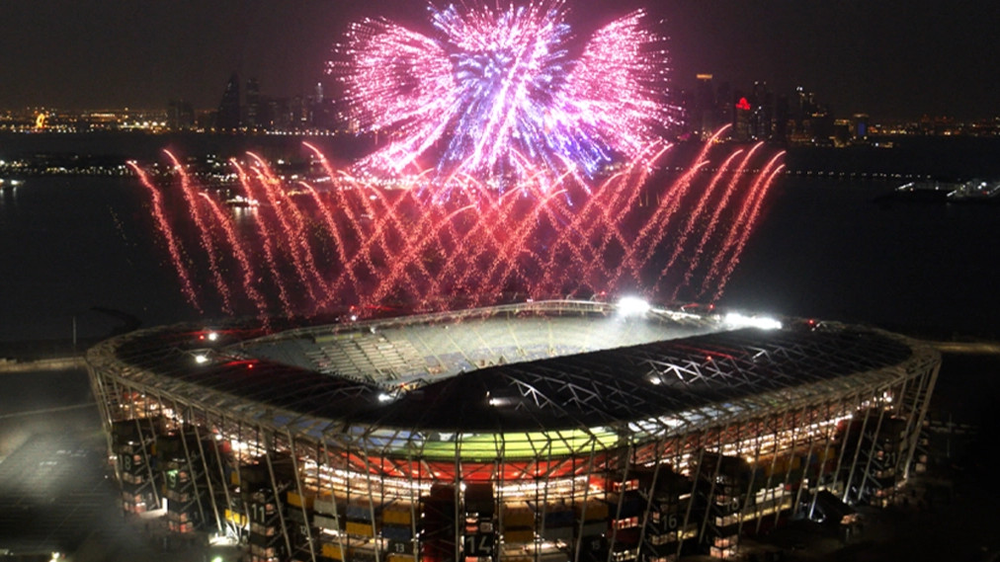

O Estádio 974 , (previamente conhecido como Estádio Ras Abu Aboud), é um dos estádios propostos pelo Catar, para a Copa do Mundo FIFA de 2022. O estádio recentemente mudou o nome devido a quantidade de contêineres que foram suficientes para sua construção.Tem uma capacidade planejada de quarenta mil espectadores. Ele será construído com um design modular, usando contêineres de transporte reciclados e deve ser desmontado após a conclusão do evento e posteriormente as peças servirão para construção de arenas menores e similares.
O estádio será uma das sedes da competição, e será o palco de alguns jogos, entre eles um das oitavas de final.
